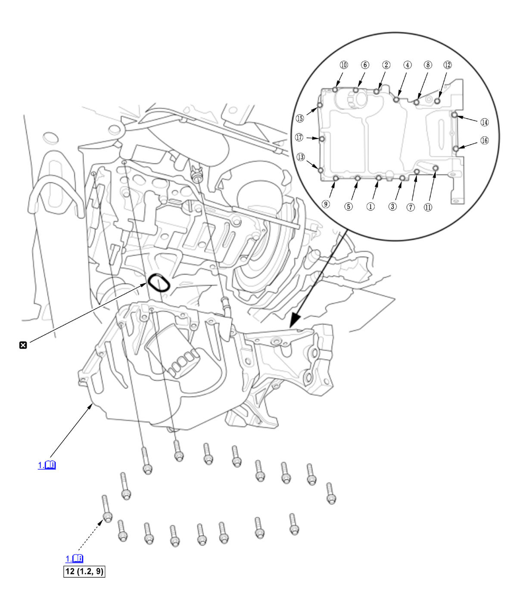

Engine Oil Pan Removal and Installation (K20C1) (2017 2018 2019 2020 2021): Installation: Procedure
NOTE:
Numbered call-outs in figure pertain to list numbers in following procedure.
Fig 1: Exploded View Of Engine Oil Pan Components With Tightening Sequence And Torque Specifications For Installation (K20C1 - 2017-21)

Courtesy of HONDA, U.S.A., INC. |
Detailed information, notes, and precautions |
 |
Torque: N.m (kgf.m, lbf.ft) |
 |
Replace |
- Oil Pan - Install
1. Apply new engine oil to the inside edge of the oil return hose. 2. Apply liquid gasket to the lower block and the cam chain case mating surface of the oil pan, and to the inside edge of the threaded bolt holes.
3. Tighten the bolts in three steps. In the final step, torque all bolts, in sequence, to the specified torque. Wipe off the excess liquid gasket on the each side of crankshaft pulley and flywheel.
- Front Subframe - Install
- Lower Arm Mounting bolt - Install
- Front Brace - Install
- CKP Sensor Cover - Install
- Engine - Support
1. Support the engine with a transmission jack and a wood block under the oil pan. - Torque Rod Bracket and Torque Rod - Install
- Lower Transmission Assembly Mounting Bolt - Install
- Clutch Cover - Install
- Connector (EPS Subharness) - Connect
- Connector (Front Suspension Stroke Sensor Subharness) - Connect
- A/C Compressor - Install
- Drive Belt - Install
- TWC Bracket - Install
- Exhaust Pipe A - Install
- Engine Undercover - Install
- Steering Joint - Connect
- Engine Oil - Refill
- Wheel Alignment - Check